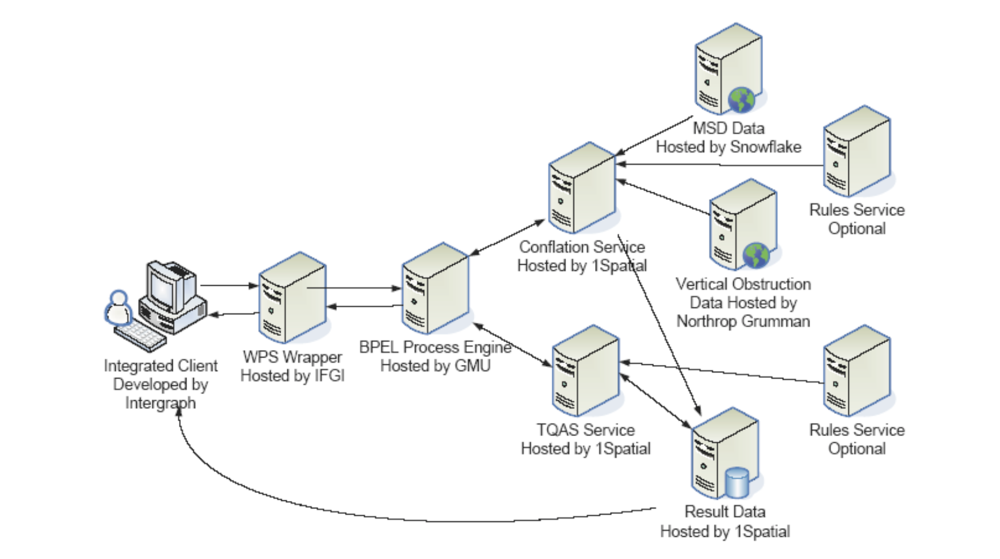

WPS - Introduction¶
Introduction¶
The OGC Web Processing Service (WPS) Interface Standard specifies a standard interface that provides access to pre-defined processes and provides job control operations that can instantiate, control and monitor processing jobs. In this context, the term process refers to any algorithm, calculation or model that either generates new data or transforms some input data into output data. A WPS enables the execution of computing processes that typically combine raster, vector, and/or coverage data to produce new raster, vector, and/or coverage data. The inputs, processes and outputs offered by a WPS can also be non-spatial.
Background¶
- History
WPS version 1.0.0 was released in June 2007. Version 2.0.1 was released in January 2015.
- Versions
2.0.1 is the current latest version
- Test Suite
- Test suites are available for:
`WPS 1.0.0 <https://github.com/opengeospatial/ets-wps10>
- Implementations
Implementations can be found at the OGC database. here <http://www.opengeospatial.org/resource/products/byspec>
Usage¶
The WPS standard enables algorithms, calculations or computational models to be made available through a configurable interface. The standard allows for short running processes to be invoked synchronously, and for long running processes to be optionally invoked asynchronously. This means that for short-running processes, a WPS client can wait for a WPS to complete a process and return the result. However, for long-running processes, a client has the option of returning to the WPS at a later point in time to check if a job is complete - and if the job is complete the client can retrieve the result.
WPS services can be used as stand-alone processing engines or as part of a service chain that includes two or more WPS services. They can also be used as part of workflows that may include non-WPS and non-OGC web service components. The standard does not constrain what applications a WPS might be used for or what it may be bound to. Consequently, WPS have been successfully demonstrated to integrate well with business process modeling technologies as illustrated in the figure below (image source: OGC document 09-053r5).
{kind=link}
The diagram above shows a workflow that was implemented in Phase 5 of the OGC testbed series using the Business Process Execution Language (BPEL) and WPS. The workflow includes components for data conflation and quality assessment. More recent testbeds have also used the Business Process Model and Notation (BPMN), as well as other workflow technologies.
Relation to other OGC Standards¶
OGC Web Feature Service Interface Standard (WFS): WFS can be used for supplying feature data as inputs into processes provided by WPS.
OGC Web Coverage Service Interface Standard (WCS): WCS can be used for supplying coverage data such as raster images as inputs into processes provided by WPS.
OGC Geography Markup Language (GML) Encoding Standard: GML can be used for encoding data supplied as inputs into WPS or for encoding data produced as outputs from a WPS.
Overview of WPS Operations¶
WPS specifies a number of different operations, of which the following are required to be supported by all servers:
- GetCapabilities
Returns service metadata that lists the processes that are offered by the WPS service.
- DescribeProcess
Returns detailed descriptions of the processes that are offered by the WPS, including descriptions of the inputs and outputs.
- Execute
Runs a specified process implemented by a server, using the input parameter values provided and returning the output values produced.
Additionally, if a server offers asynchronous processing capabilities, it can optionally offer the following operations as well:
- GetStatus
Returns the status of an asynchronously executed job.
- GetResult
Returns the result of a finished processing job that was invoked asynchronously.
- Dismiss
Allows a client to terminate asynchronous processing jobs.
Example¶
This WPS Demo server offers multiple processes including some for buffering, convex hull calculation and coordinate transformation.
An extract from the capabilities document is shown below. Notice that the ProcessSummary element includes a title and identifier to identify a process. In this case, a feature buffering operation is advertised. Feature buffering calculates an area of a specified distance away from a feature. This process summary is provided to let both human users and software clients know what functionality individual processes offer.
<wps:ProcessSummary processVersion="1.1.0" jobControlOptions="sync-execute async-execute" outputTransmission="value reference">
<ows:Title>org.n52.wps.server.algorithm.SimpleBufferAlgorithm</ows:Title>
<ows:Identifier>org.n52.wps.server.algorithm.SimpleBufferAlgorithm</ows:Identifier>
<ows:Metadata xlin:role="Process description" xlin:href="http://geoprocessing.demo.52north.org:8080/wps/WebProcessingService?service=WPS&request=DescribeProcess&version=2.0.0&identifier=org.n52.wps.server.algorithm.SimpleBufferAlgorithm"/>
</wps:ProcessSummary>
Client Usage¶
A client needs to know the endpoint, that is the location of the WPS service to be able to interact with the server. The endpoints for sending requests to can be obtained from the GetCapabilities response.
The link to the GetCapabilities request
Once the GetCapabilities response has been received, the client can then retrieve a detailed description of one of the processes. In the case of the example server above, the detailed description of the buffering operation can be retrieved using the following request:
The DescribeProcess response includes detailed information about the types of inputs and outputs the process expects. The client uses this information to create an Execute request that can be used to invoke a feature buffering process. The Execute request can then be sent to <http://geoprocessing.demo.52north.org:8080/wps/WebProcessingService> through the HTTP Post method.
<wps:Execute xmlns:wps="http://www.opengis.net/wps/2.0"
xmlns:ows="http://www.opengis.net/ows/2.0" xmlns:xlink="http://www.w3.org/1999/xlink"
xmlns:xsi="http://www.w3.org/2001/XMLSchema-instance"
xsi:schemaLocation="http://www.opengis.net/wps/2.0 ../wps.xsd" service="WPS"
version="2.0.0" response="document" mode="sync">
<ows:Identifier>org.n52.wps.server.algorithm.SimpleBufferAlgorithm</ows:Identifier>
<wps:Input id="data">
<wps:Reference schema="http://schemas.opengis.net/gml/3.1.1/base/feature.xsd" xlink:href="http://geoprocessing.demo.52north.org:8080/geoserver/wfs?SERVICE=WFS&VERSION=1.0.0&REQUEST=GetFeature&TYPENAME=topp:tasmania_roads&SRS=EPSG:4326&OUTPUTFORMAT=GML3"/>
</wps:Input>
<wps:Input id="width">
<wps:Data><wps:LiteralValue>0.05</wps:LiteralValue></wps:Data>
</wps:Input>
<wps:Output id="result" transmission="value"/>
</wps:Execute>
The Execute request includes sub-elements that identify the process to be invoked, the inputs provided (as well as their values) and the outputs to be produced. The data returned by the response from the process can be rendered by a desktop Geographic Information System (GIS) or forwarded to another OGC WPS for further processing.